LOS ANGELES
1964년 문을 연 선셋 스트립의 본진. DJ를 유리 부스에 올려 춤추게 한 것이 고고 댄싱*의 기원이 됐다. 몇 블록 옆의 초라한 술집 런던 포그에서 하룻밤 몇 달러를 받으며 넉 달을 버틴 무명의 도어스가 이 무대의 하우스 밴드**로 올라왔고 — 런던 포그는 도어스를 내보낸 그해를 넘기지 못하고 사라졌다 — 짐 모리슨이 ‘The End’의 금기 가사를 내지른 밤에는 여기서도 해고당했다. 그 뒤로도 이 무대는 밴 헤일런·머틀리 크루·건즈 앤 로지스를 차례로 세상에 내보냈다. LA 록의 관문은 60년이 지난 지금도 영업 중이다.
* 고고 댄싱 — 무대 옆 부스에서 춤추는 스타일. 이 클럽에서 시작해 세계로 퍼졌다.
** 하우스 밴드 — 클럽에 전속으로 고용돼 매일 밤 연주하는 밴드.

HOLLYWOOD
1968년 헐리우드의 극장을 개조해 문을 연 사이키델릭 볼룸. 회전 무대와 라이트 쇼를 갖추고 제퍼슨 에어플레인, 그레이트풀 데드, 캔드 히트를 올렸다. 몇 달 만에 문을 닫았지만 샌프란시스코의 사이키델리아를 LA로 번역한 짧고 강렬한 실험이었다. 수명이 아니라 밀도로 기억되는 클럽.

NEW YORK
간판의 약자는 컨트리·블루그래스·블루스지만, 이 바워리의 술집이 실제로 키운 건 펑크였다. 텔레비전과 라몬스, 패티 스미스, 블론디, 토킹 헤즈가 전부 이 좁고 더러운 무대에서 신인 시절을 통과했다. 규칙은 하나 — 자작곡만 연주할 것. 2006년 문을 닫던 밤의 마지막 무대에는 패티 스미스가 섰다. 클럽은 사라졌지만 뉴욕 펑크라는 장르 전체가 이 술집의 유산이다.

NEW YORK
1977년 문을 연 디스코의 성전. 비앙카 재거가 백마를 타고 입장했고, 그레이스 존스가 무대와 객석의 경계를 지웠다. 문 앞의 선별 입장*은 그 자체로 공연이었다 — 안에서는 앤디 워홀과 무명 청년이 같은 플로어에서 춤췄다. 오너들이 탈세로 구속되며 원형은 33개월 만에 끝났지만, 클럽 문화라는 개념을 다시 쓴 33개월이었다.
* 선별 입장(도어 폴리시) — 입구에서 손님을 골라 들이던 스튜디오 54의 악명 높은 방식.
Listen
들으러 가기
▶ 플레이리스트 재생 — Spotify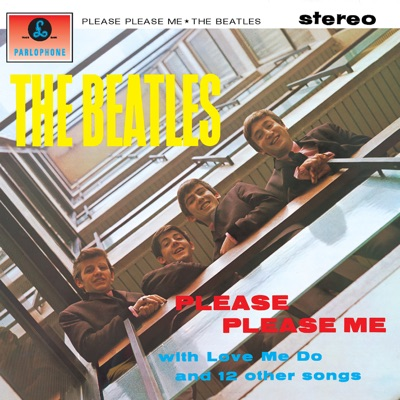
01The Beatles — Twist and Shout캐번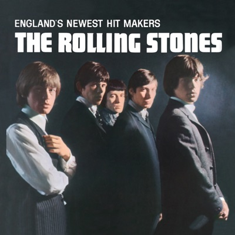
02The Rolling Stones — Not Fade Away마퀴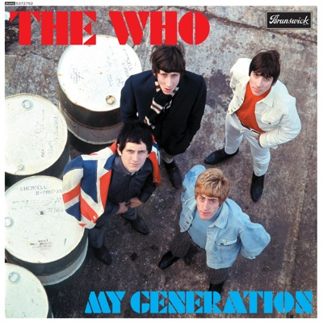
03The Who — My Generation마퀴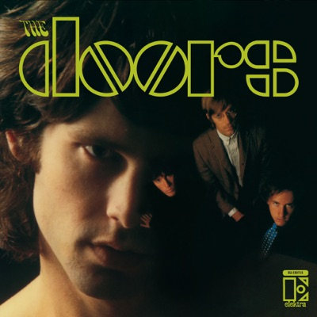
04The Doors — Break On Through위스키 어 고고 05The Doors — Light My Fire위스키 어 고고
05The Doors — Light My Fire위스키 어 고고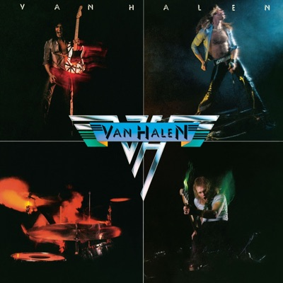
06Van Halen — Runnin' with the Devil위스키 어 고고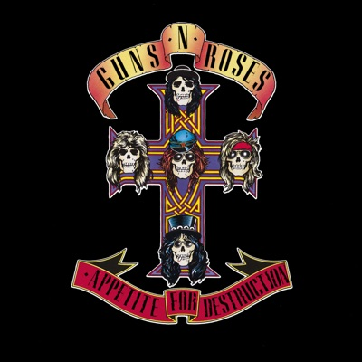
07Guns N' Roses — Welcome to the Jungle위스키 어 고고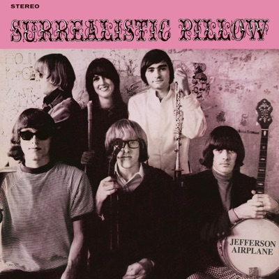
08Jefferson Airplane — Somebody to Love칼레이도스코프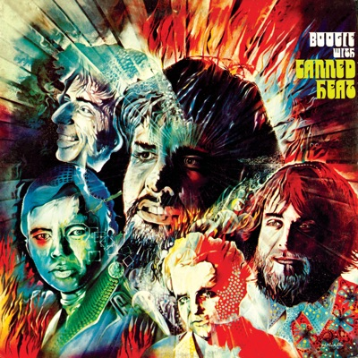
09Canned Heat — On the Road Again칼레이도스코프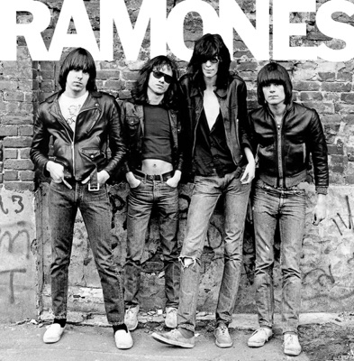
10Ramones — Blitzkrieg BopCBGB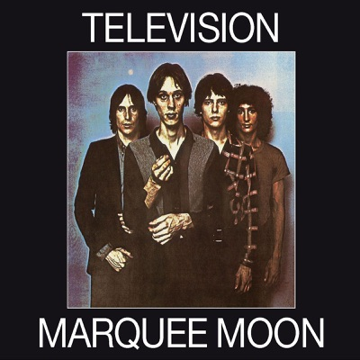
11Television — Marquee MoonCBGB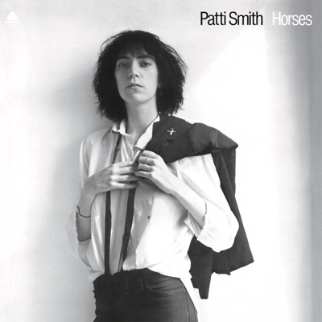
12Patti Smith — GloriaCBGB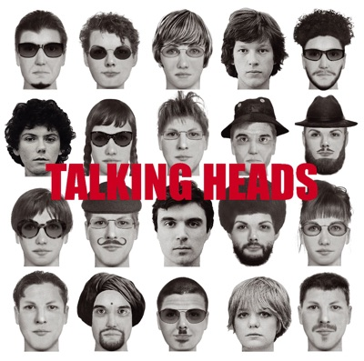
13Talking Heads — Psycho KillerCBGB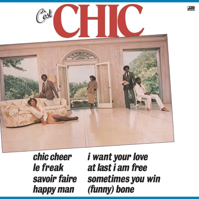
14Chic — Le Freak스튜디오 54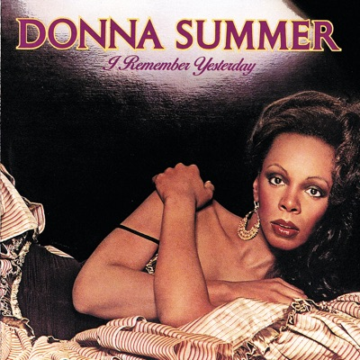
15Donna Summer — I Feel Love스튜디오 54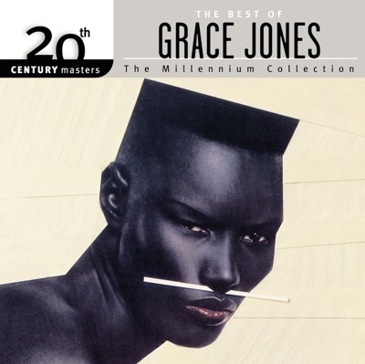
16Grace Jones — La Vie en rose르 팔라스